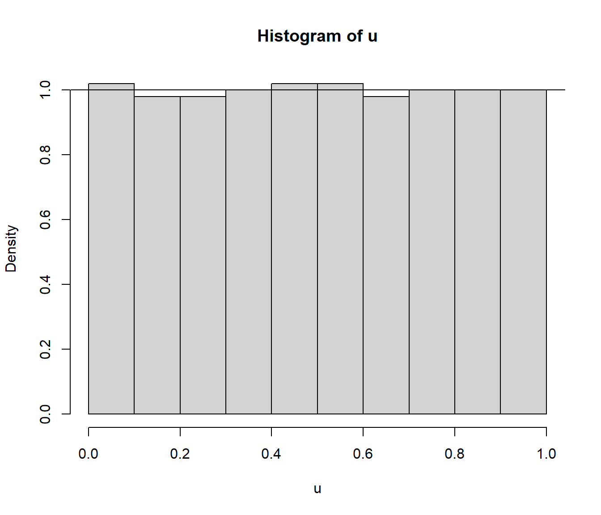

2.1 Generadores congruenciales lineales
En los generadores congruenciales lineales se considera una combinación lineal de los últimos \(k\) enteros generados y se calcula su resto al dividir por un entero fijo \(m\). En el método congruencial simple (de orden \(k = 1\)), partiendo de una semilla inicial \(x_0\), el algoritmo secuencial es el siguiente: \[\begin{aligned} x_{i} & = (ax_{i-1}+c) \bmod m \\ u_{i} & = \dfrac{x_{i}}{m} \\ i & =1,2,\ldots \end{aligned}\] donde \(a\) (multiplicador), \(c\) (incremento) y \(m\) (módulo) son enteros positivos5 fijados de antemano (los parámetros de este generador). Si \(c=0\) el generador se denomina congruencial multiplicativo (Lehmer, 1951) y en caso contrario se dice que es mixto (Rotenburg, 1960).
Obviamente los parámetros y la semilla determinan los valores generados, que también se pueden obtener de forma no recursiva: \[x_{i}=\left( a^{i}x_0+c\frac{a^{i}-1}{a-1}\right) \bmod m\]
Este método está implementado6 en la función rlcg() del paquete simres, imitando el funcionamiento del generador uniforme de R (ver también simres::rng(); fichero rng.R):
simres::rlcg## function(n, seed = as.numeric(Sys.time()), a = 7^5, c = 0, m = 2^31 - 1) {
## u <- numeric(n)
## for(i in 1:n) {
## seed <- (a * seed + c) %% m
## u[i] <- seed/m # (seed + 1)/(m + 1)
## }
## # Almacenar semilla y parámetros
## assign(".rng", list(seed = seed, type = "lcg",
## parameters = list(a = a, c = c, m = m)), envir = globalenv())
## # .rng <<- list(seed = seed, type = "lcg", parameters = list(a = a, c = c, m = m))
## # Para continuar con semilla y parámetros:
## # with(.rng, rlcg(n, seed, parameters$a, parameters$c, parameters$m))
## # Devolver valores
## return(u)
## }
## <bytecode: 0x0000000013371c78>
## <environment: namespace:simres>Ejemplos de parámetros:
\(c=0\), \(a=2^{16}+3=65539\) y \(m=2^{31}\), generador RANDU de IBM (no recomendable).
\(c=0\), \(a=7^{5}=16807\) y \(m=2^{31}-1\) (primo de Mersenne), Park y Miller (1988) minimal standar, empleado por las librerías IMSL y NAG.
\(c=0\), \(a=48271\) y \(m=2^{31}-1\) actualización del minimal standar propuesta por Park, Miller y Stockmeyer (1993).
A pesar de su simplicidad, una adecuada elección de los parámetros permite obtener de manera eficiente secuencias de números “aparentemente” i.i.d. \(\mathcal{U}(0,1)\). Durante los primeros años, el procedimiento habitual consistía en escoger \(m\) de forma que se pudiera realizar eficientemente la operación del módulo, aprovechando la arquitectura del ordenador (por ejemplo \(m = 2^{31}\) si se emplean enteros con signo de 32 bits). Posteriormente se seleccionaban \(c\) y \(a\) de forma que el período \(p\) fuese lo más largo posible (o suficientemente largo), empleando los resultados mostrados a continuación.
Teorema 2.1 (Hull y Dobell, 1962)
Un generador congruencial tiene período máximo (\(p=m\)) si y solo si:
\(c\) y \(m\) son primos relativos (i.e. \(m.c.d.(c, m) = 1\)).
\(a-1\) es múltiplo de todos los factores primos de \(m\) (i.e. \(a \equiv 1 \bmod q\), para todo \(q\) factor primo de \(m\)).
Si \(m\) es múltiplo de \(4\), entonces \(a-1\) también lo ha de ser (i.e. \(m \equiv 0 \bmod 4\Rightarrow a \equiv 1 \bmod 4\)).
Algunas consecuencias:
Si \(m\) primo, \(p=m\) si y solo si \(a=1\).
Un generador multiplicativo no cumple la condición 1 (\(m.c.d.(0, m)=m\)).
Teorema 2.2
Un generador multiplicativo tiene período máximo (\(p=m-1\)) si:
\(m\) es primo.
\(a\) es una raiz primitiva de \(m\) (i.e. el menor entero \(q\) tal que \(a^{q}=1 \bmod m\) es \(q=m-1\)).
Además de preocuparse de la longitud del ciclo, las secuencias generadas deben aparentar muestras i.i.d. \(\mathcal{U}(0,1)\).
Uno de los principales problemas es que los valores generados pueden mostrar una clara estructura reticular.
Este es el caso por ejemplo del generador RANDU de IBM muy empleado en la década de los 70 (ver Figura 2.1)7.
Por ejemplo, el conjunto de datos randu contiene 400 tripletas de números sucesivos obtenidos con la implementación de VAX/VMS 1.5 (1977).
library(simres)
system.time(u <- rlcg(n = 9999,
seed = 543210, a = 2^16 + 3, c = 0, m = 2^31))## user system elapsed
## 0 0 0# xyz <- matrix(u, ncol = 3, byrow = TRUE)
xyz <- stats::embed(u, 3)
library(plot3D)
# points3D(xyz[,1], xyz[,2], xyz[,3], colvar = NULL, phi = 60,
# theta = -50, pch = 21, cex = 0.2)
points3D(xyz[,3], xyz[,2], xyz[,1], colvar = NULL, phi = 60,
theta = -50, pch = 21, cex = 0.2)Figura 2.1: Grafico de dispersión de tripletas del generador RANDU de IBM (contenidas en 15 planos).
En general todos los generadores de este tipo van a presentar estructuras reticulares. Marsaglia (1968) demostró que las \(k\)-uplas de un generadores multiplicativo están contenidas en a lo sumo \(\left(k!m\right)^{1/k}\) hiperplanos paralelos (para más detalles sobre la estructura reticular, ver por ejemplo Ripley, 1987, sección 2.7). Por tanto habría que seleccionar adecuadamente \(m\) y \(c\) (\(a\) solo influiría en la pendiente) de forma que la estructura reticular sea imperceptible teniendo en cuenta el número de datos que se pretende generar (por ejemplo de forma que la distancia mínima entre los puntos sea próxima a la esperada en teoría).
Se han propuesto diversas pruebas (ver Sección 2.3) para determinar si un generador tiene problemas de este tipo y se han realizado numerosos estudios para determinadas familias (e.g. Park y Miller, 1988, estudiaron que parámetros son adecuados para \(m=2^{31}-1\)).
En ciertos contextos muy exigentes (por ejemplo en criptografía), se recomienda considerar un “periodo de seguridad” \(\approx \sqrt{p}\) para evitar este tipo de problemas.
Aunque estos generadores tienen limitaciones en su capacidad para producir secuencias muy largas de números i.i.d. \(\mathcal{U}(0,1)\), son un elemento básico en generadores más avanzados (siguiente sección).
Consideramos el generador congruencial, de ciclo máximo, definido por: \[\begin{aligned} x_{n+1} & =(5x_{n}+1)\ \bmod\ 512,\nonumber\\ u_{n+1} & =\frac{x_{n+1}}{512},\ n=0,1,\dots\nonumber \end{aligned}\]
Generar 500 valores de este generador, obtener el tiempo de CPU, representar su distribución mediante un histograma (en escala de densidades) y compararla con la densidad teórica.
set.rng(321, "lcg", a = 5, c = 1, m = 512) # Establecer semilla y parámetros nsim <- 500 system.time(u <- rng(nsim))## user system elapsed ## 0 0 0hist(u, freq = FALSE) abline(h = 1) # Densidad uniformeFigura 2.2: Histograma de los valores generados.
En este caso concreto la distribución de los valores generados es aparentemente más uniforme de lo que cabría esperar, lo que induciría a sospechar de la calidad de este generador (ver Ejemplo 2.2 en Sección 2.3).
Calcular la media de las simulaciones (
mean) y compararla con la teórica.La aproximación por simulación de la media teórica es:
mean(u)## [1] 0.4999609La media teórica es 0.5. Error absoluto \(3.90625\times 10^{-5}\).
Aproximar (mediante simulación) la probabilidad del intervalo \((0.4;0.8)\) y compararla con la teórica.
La probabilidad teórica es 0.8 - 0.4 = 0.4
La aproximación mediante simulación:
sum((0.4 < u) & (u < 0.8))/nsim## [1] 0.402mean((0.4 < u) & (u < 0.8)) # Alternativa## [1] 0.402
Se supone además que \(a\), \(c\) y \(x_0\) son menores que \(m\), ya que, dadas las propiedades algebraicas de la suma y el producto en el conjunto de clases de resto módulo \(m\) (que es un anillo), cualquier otra elección de valores mayores o iguales que \(m\) tiene un equivalente verificando esta restricción.↩︎
Aunque de forma no muy eficiente. Para evitar problemas computacionales, se recomienda realizar el cálculo de los valores empleando el método de Schrage (ver Bratley et al., 1987; L’Ecuyer, 1988).↩︎
Alternativamente se podría utilizar la función
plot3ddel paquetergl, y rotar la figura (pulsando con el ratón) para ver los hiperplanos:rgl::plot3d(xyz)↩︎